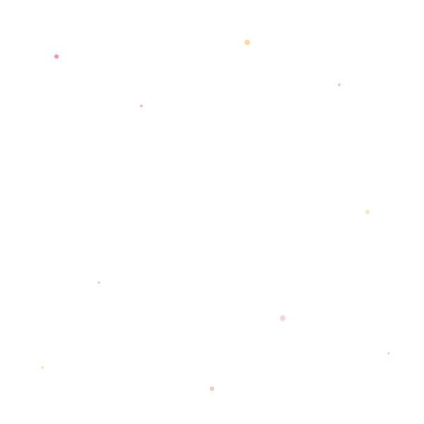
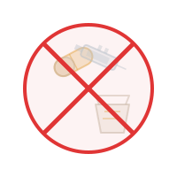

Kenali. Pahami. Lindungi.
Edukasi visual tentang cara narkotika membajak otak dan tubuh, serta jalan menuju pemulihan.
7 Aspek Dampak Narkoba pada Tubuh & Kehidupan
Dari mekanisme di tingkat sel saraf hingga dampak sosial dan kebijakan nasional, setiap bab menjelaskan secara spesifik bagaimana narkotika memengaruhi otak, tubuh, dan kehidupan penggunanya. Pilih bab untuk mempelajari risikonya secara lebih mendalam.
Statistik dan Skala Dampak
Angka-angka berikut bukan sekadar statistik — ini adalah cerminan skala nyata dampak narkoba terhadap kesehatan manusia, dikompilasi dari data UNODC, BNN, dan BRIN.
Dampak Narkoba pada Setiap Organ
Pilih organ untuk memahami bagaimana narkotika secara spesifik memengaruhi setiap sistem tubuh — dari mekanisme kerusakan di tingkat sel hingga risiko jangka panjangnya.
Zat adiktif menembus sawar darah-otak dan meniru atau memaksa pelepasan neurotransmiter alami seperti dopamin. Sebagai respons, otak menurunkan jumlah reseptor dopamin yang tersisa, sementara area pengendali impuls di korteks prefrontal justru melemah — memicu siklus toleransi dan menurunnya kemampuan mengendalikan dorongan.
Fakta Penting Seputar Narkoba
Pertanyaan yang Sering Diajukan
Jawaban berbasis fakta untuk pertanyaan yang paling sering muncul — termasuk meluruskan miskonsepsi umum tentang ganja "alami", kecanduan, dan ke mana mencari bantuan.
